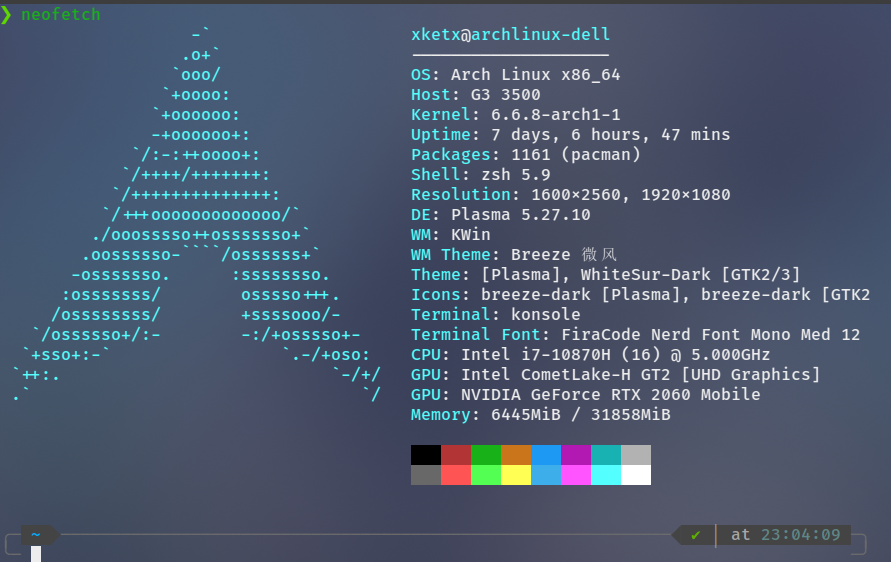
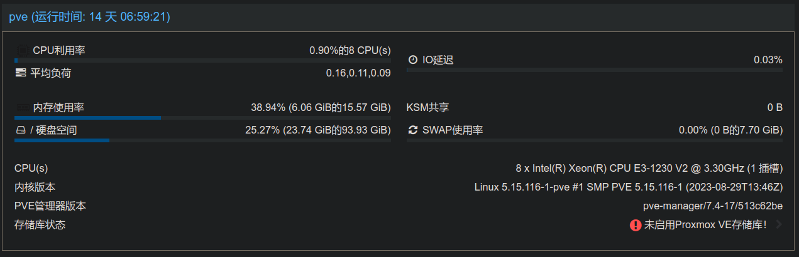
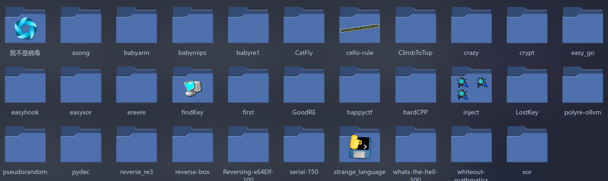

2023.log
noxke’s 2023
:)
奇怪的一年，让我最开心的估计是linux

逐渐受不了windows繁琐的配置、臃肿的文件系统、频繁蓝屏…，2月的时候想着换linux试试，犹豫了很久该选哪个发行版，最后为了方便养老选了archlinux
-Syyu一把梭有多爽，用livecd救系统就有多狼狈，一年滚挂了五六次，小的图形化挂掉，大的直接/etc炸掉。挂掉的次数貌似比用win多得多，但感觉值得，安装软件不用各种“高速下载”，卸载软件不用斗智斗勇…
一直很想玩服务器，今年总算捡垃圾弄了台

洋垃圾e3-1230，虽然很垃圾，但自己all in one搭了软路由、虚拟机平台、docker集群，做了多网络隔离，也挂机了数千小时的mc服务器
接触ctf一年了，没什么成绩，但感觉是段不错的经历，一年应该超过了100道逆向题

从最开始的只会Ida F5反编译，到现在能跟着调试分析vmp虚拟机，从用户态慢慢过渡到内核态，调试了c、c++、rust、python、java等各种语言运行过程，有嗯看汇编十几个小时忘记吃饭，有手撕两个小时发现是md5，有手动patch几个小时才想起ida脚本…
一直以为自己看淡了感情，但破站年度总结一看「I LOVE YOU」「恋爱色魔法」「嘘つきは恋のはじまり」都听了四五十次，庆幸洛天依是纸片人，感谢洛佬无数次帮我走出低谷。
:(
emo
谎言
孤独
压力
未来
2023 最难受的一年
echo $CONTENT > 2024.task
以自己开心为目的
2023.log
https://blog.noxke.icu/2023/12/31/daily/2023-log/